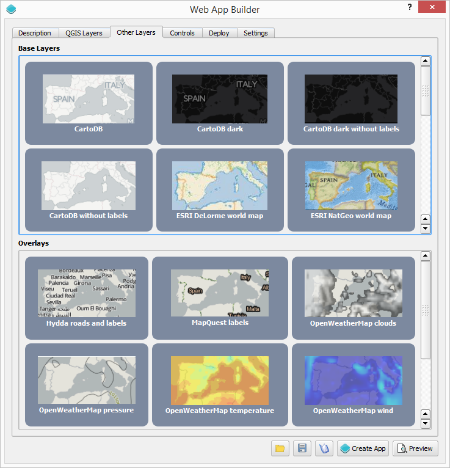
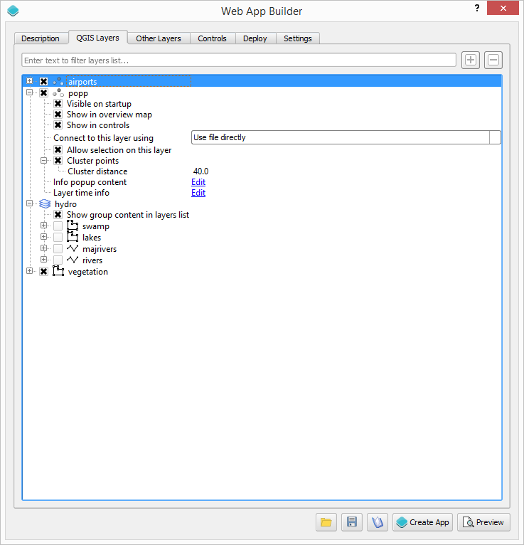
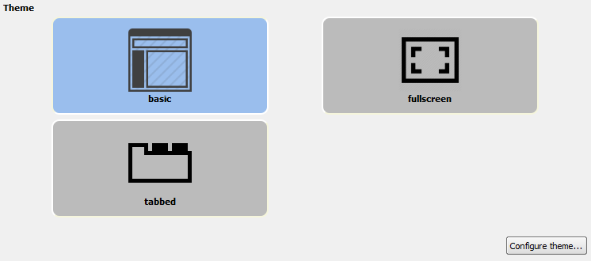
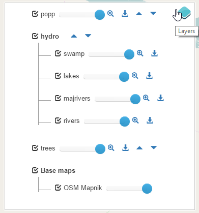
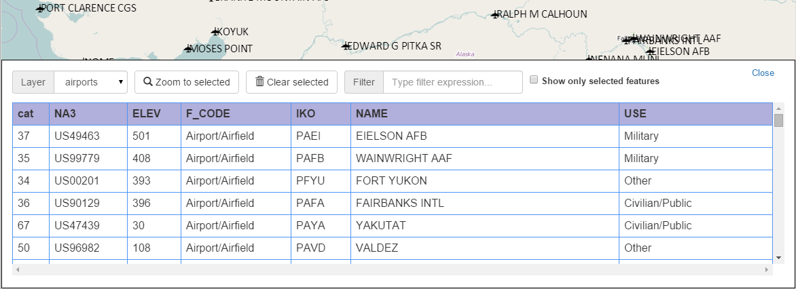
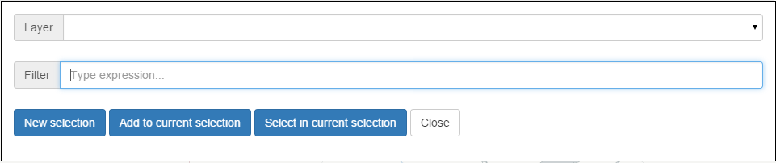
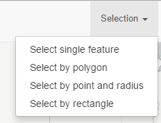
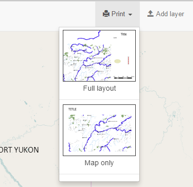
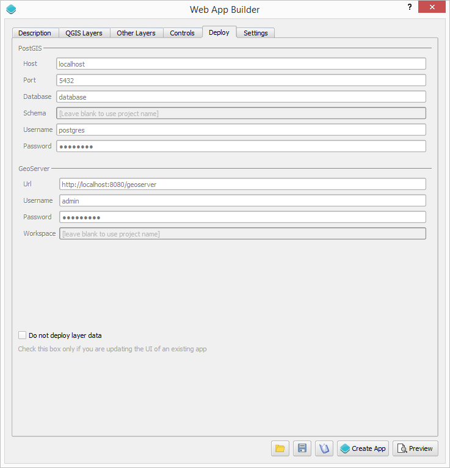

class: center, middle, inverse # QGIS Web App Builder ## Víctor Olaya <img src="./images/logo.png"/> --- .left-column[ ## Main ideas ] .right-column[ - Create rich OL3-based web apps without having to write code - Easily update/modify created apps - Leverage OL3 ] --- .left-column[ ## Elements of a web app ] .right-column[ - Map (OL3) - Layers - Theme (appearance) - Controls and tools (widgets) - Data storage and deployment (for layers and app itself) ] --- .left-column[ ## Map ] .right-column[ - Map behaviour is defined in QGIS and translated to an OL3 Map object - Extent, zoom levels, scale-dependent visibility... ] --- .left-column[ ## Layers ] .right-column[ - Base layers (from publicly available services) - QGIS layers - Styling defined using QGIS symbology and automatically exported - Automated format conversion and reprojection (If QGIS can use it, the web app can use it as well) - Several options depending on layer type - Clustering, time info, allow feature selection (for vector layers)... ] --- .left-column[ ## Layers ] .right-column[  ] --- .left-column[ ## Layers ] .right-column[  ] --- .left-column[ ## Theme ] .right-column[ - Predefined themes - Fully configurable  ] --- .left-column[ ##Controls and tools ] .right-column[ - OL3 default controls (zoom buttons, scale line, overview map...) - Custom controls (Layers list, legend, home extent...) - Custom tools that interact with the map (layer filters, attributes table, charts, queries...) - Other elements (info panels, links...) ] --- .left-column[ ##Controls and tools ### Some custom tools and controls ] .right-column[ Layers list  ] --- .left-column[ ##Controls and tools ### Some custom tools and controls ] .right-column[ Attributes table  Query  ] --- .left-column[ ##Controls and tools ### Some custom tools and controls ] .right-column[ Measure tools <img src="./images/measuretools.png" width="40%"/> Selection tools  ] --- .left-column[ ##Controls and tools ### Some custom tools and controls ] .right-column[ *Bookmarks as narrative map* <img src="./images/bookmarks.png" width="100%"/> ] --- .left-column[ ##Controls and tools ### Some custom tools and controls ] .right-column[ Timeline <img src="./images/timeline.png" width="100%"/> Legend <img src="./images/legend.png" width="100%"/> ] --- .left-column[ ##Controls and tools ### Some custom tools and controls ] .right-column[ Printing  ] --- .left-column[ ##Controls and tools ### Analysis ] .right-column[ - Analysis algorithms from Turf.js - Custom algorithms - Desktop-GIS approach ] --- .left-column[ ## Data storage and deployment ] .right-column[ - Create and use GeoJSON files - Import into PostGIS and connect through GeoServer - Upload to GeoServer and connect using W[X]S service - Create app and store locally - Create app and deploy to cloud service ] --- .left-column[ ## Data storage and deployment ] .right-column[  ] --- class: center, middle, inverse # Demo --- .left-column[ ##Future development ] .right-column[ - Deployment to cloud - Integration with WebSDK and Node.js - Integration with other QGIS elements (time manager plugin...) ] --- class: center, middle, inverse # Thanks! ## Víctor Olaya ## volaya@boundlessgeo.com